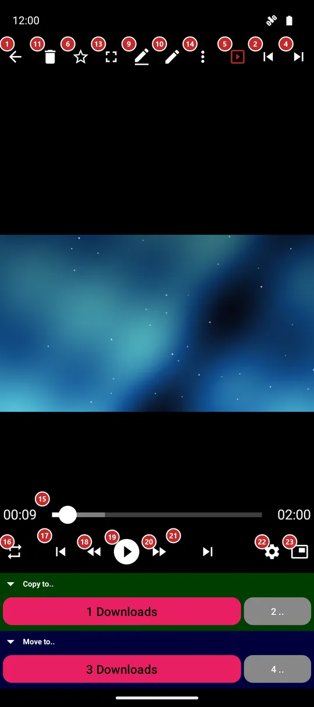
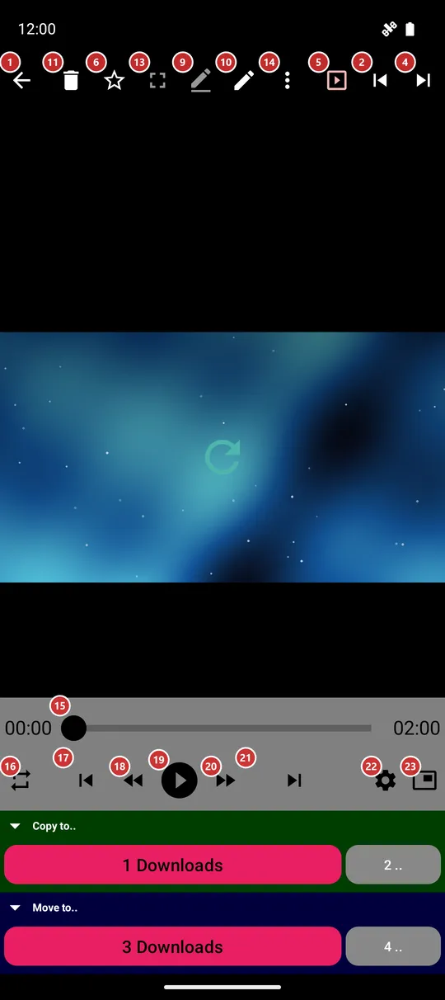

Player
What this is for
The player opens a file from the file browser: it plays a video or music, shows a photo, and reads a document, a book or a text. The same screen has the buttons to move on to another file, to file the one you are on and to share it.


In this order
- Open a file from the file browser. A video starts in full screen: tap the picture to bring the buttons back, and use Fullscreen 13 to switch between the picture alone and the picture with the command panel.
- Play/Pause 19 starts and stops playback; Rewind 18 and Forward 20 jump 10 seconds, and the seek bar 15 takes you to any moment.
- Previous file 17 and Next file 21 walk through the folder in the order of the file browser; a swipe left or right on the picture does the same. Random 3 jumps to any file.
- Playback order 16 chooses what happens when a file ends: repeat one, loop the list, play through or shuffle.
- Playback settings 22 holds speed, volume, soundtrack, subtitles and colors.
- Rename 9, Edit 10, Delete 11 and Share 7 act on the file you are on, Undo 12 takes back a delete or a move, and Favorite 6 adds the file to your favorites.
- More actions 14 opens the menu with everything else for this kind of file, such as save a frame, rotate, cast or translate. Picture in picture 23 shrinks a video into a small window, and Help in the menu or F1 opens this page.
The elements
Command panel
1BackCloses the player and returns to the file list.
The Back button of the device does the same. A tap in the top left corner of the picture does it too.
2PreviousGoes to the previous file of the folder.
It follows the order of the file browser. A file you deleted or moved is already gone from the list, so Previous never lands on it.
3Random JumpJumps to a random file of the folder.
Handy for a mixed listen or a quick look at something you forgot you had.
4NextGoes to the next file of the folder.
It follows the order of the file browser. A swipe left on a photo or video does the same.
5SlideshowStarts and stops the slideshow.
In a slideshow the player moves to the next file by itself. The pace and the look are set in Settings, on the Media tab.
6FavoriteAdds the file to your favorites, or takes it out.
Everything you mark is gathered in Favorites on the main screen.
8File InformationShows what the app knows about the file.
Size, full path and, where they apply, resolution or camera settings.
9RenameRenames the file you are on.
A dialog asks for the new name.
10EditOpens the editing tools for the file you are on.
What opens depends on the kind of file: the playback settings for a video or music, the editing window for a photo, a GIF or a PDF.
11DeleteDeletes the file you are on, after you confirm.
A deleted file leaves the list at once.
- Undo
- Undo brings the file back for as long as the app still remembers the operation.
12UndoTakes back the last delete or move.
The button appears right after such an operation.
13Fullscreen modeHides the command panel so only the picture is left.
To get the panel back, tap the picture or the Exit fullscreen button that stays in the corner. Turning the phone sideways goes full screen by itself, and turning it back upright brings the panel back. A video keeps playing through both.
14More actionsOpens the menu with the rest of the actions.
Buttons that did not fit move here, so nothing disappears. The menu depends on the kind of file: save a frame of a video, rotate or crop a photo, search, translate and extract text in a document or a book, lyrics and sleep timer for music, cast, print and Send to. The F1 key opens this page; so does Help in this menu.
Choose a file: G opens Thumbnails, F4 opens File list, and N opens Go to file. File numbers start at 1. The same actions are in the three-dots menu. A window without a collection explains why file navigation is unavailable.
Video keys: Use . for Next frame. Previous frame stays disabled with a reason when the decoder cannot step backwards. Shift+L sets A, then B, then clears the repeat; B must be after A. The range is shown until canceled, the file changes or the window stops. These video actions are also in the menu.
Slideshow keys: S starts a slideshow. Press S again to halve the running interval, down to 1 second; I starts or switches to random order. This also works in a separate player when its folder contains several files. A single-file window explains the limitation.
Playback
15Seek barShows how far the file has played and lets you jump to any moment.
Drag the knob or tap on the bar. The time played and the length of the file stand on both sides of it.
16Playback orderChooses what happens when a file ends.
Repeat one plays the same file over and over. Loop list goes back to the first file after the last. Play through stops after the last file. Shuffle plays in a random order.
17Previous fileGoes to the previous file of the folder.
The same as Previous on the command panel, close to the thumb.
18Rewind 10 secondsJumps 10 seconds back.
Press it several times to go back further.
19Play/PauseStarts and pauses playback.
For an animated picture such as a GIF it plays and stops the animation. The player remembers how far you watched, so the same file continues from there next time.
20Fast forward 10 secondsJumps 10 seconds ahead.
Press it several times to skip a long intro.
21Next fileGoes to the next file of the folder.
The same as Next on the command panel, close to the thumb.
22Playback settingsOpens the window with the playback settings.
Speed, including very slow 0.1x and 0.3x, volume, brightness, soundtrack, subtitles and colors. In portrait the sliders stand upright, so a thumb moves them from bottom to top.
23Picture in PictureShrinks the video into a small window above other apps.
The button is shown for a video when the device supports it.